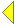
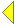
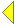
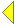

The Prisec model is a model with a primary and secondary source of the concise and comprehensive documents resp.
 
 ![Next page: LENO [Section] -- Keyboard shortcut: 'n'](./images/nav-right.gif "Next page: LENO [Section] -- Keyboard shortcut: 'n'")


 
